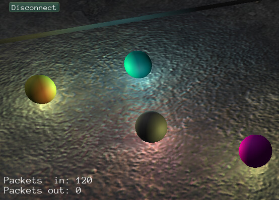

George1
I just looked at replication scene. It is easy to change client object look than anticipated.
Just add multiple material then index it. Then just change loading material index when client connect.
I just copy Lumak material and change below function in two places.
Node* SceneReplication::CreateControllableObject()
{
//Add material with these name by index to data folder: ballmat%i.xml", i = 1..10
static const int MAX_ARRAY_SIZE = 10;
static String colorArray[MAX_ARRAY_SIZE] = {"WHITE", "GRAY", "BLACK", "RED", "GREEN",
"BLUE", "CYAN", "MAGENTA", "YELLOW", "VEGAS GOLD"};
int idx = Random(MAX_ARRAY_SIZE - 1);
String name = colorArray[idx];
auto* cache = GetSubsystem<ResourceCache>();
// Create the scene node & visual representation. This will be a replicated object
Node* ballNode = scene_->CreateChild("Ball");
ballNode->SetPosition(Vector3(Random(40.0f) - 20.0f, 5.0f, Random(40.0f) - 20.0f));
ballNode->SetScale(0.5f);
auto* ballObject = ballNode->CreateComponent<StaticModel>();
ballObject->SetModel(cache->GetResource<Model>("Models/Sphere.mdl"));
//ballObject->SetMaterial(cache->GetResource<Material>("Materials/StoneSmall.xml"));
String matName = ToString("NetDemo/ballmat%i.xml", idx);
ballObject->SetMaterial(cache->GetResource<Material>(matName)); //Change 2
// Create the physics components
auto* body = ballNode->CreateComponent<RigidBody>();
body->SetMass(1.0f);
body->SetFriction(1.0f);
// In addition to friction, use motion damping so that the ball can not accelerate limitlessly
body->SetLinearDamping(0.5f);
body->SetAngularDamping(0.5f);
auto* shape = ballNode->CreateComponent<CollisionShape>();
shape->SetSphere(1.0f);
// Create a random colored point light at the ball so that can see better where is going
auto* light = ballNode->CreateComponent<Light>();
light->SetRange(3.0f);
light->SetColor(
Color(0.5f + ((unsigned)Rand() & 1u) * 0.5f, 0.5f + ((unsigned)Rand() & 1u) * 0.5f, 0.5f + ((unsigned)Rand() & 1u) * 0.5f));
return ballNode;
}
